Capacidad disponibleCotización y emisiónAutomóvil, Personas y manejo de cotizaciones
Disponible
Del interés a la póliza, en un solo flujo
Esta capacidad cubre el ciclo comercial completo: cotizar productos de
Automóvil (RCV y Casco) y de Personas (Gastos Funerarios), consultar y
retomar cotizaciones guardadas, y emitir la póliza con los datos,
documentos y confirmaciones necesarios. Todo construido con Formas
Configurables, listo para integrar al nuevo Portal.
No es un mockup ni un plan a futuro: es una capacidad operativa que
reutiliza el mismo patrón de wizard entre ramos, acelera a la fuerza
de ventas y deja el camino abierto para ampliar productos sin reinventar
la experiencia.
Cotizar con patrón único
RCV, Casco y Personas comparten la misma lógica de planes, datos y resumen de prima.
Retomar sin fricción
Consulta, carga e impresión de cotizaciones para cerrar la venta en el momento oportuno.
Emitir con evidencia
Wizard de emisión con titular, documentos, confirmación y entrega de la póliza.
Automóvil
Cotización RCV y Casco, y emisión de póliza con el mismo wizard
Manejo de cotizaciones
Búsqueda, carga para emitir e impresión de cotización o recibo
Personas / Funerario
Cotización con grupo familiar y emisión con beneficiarios y documentos
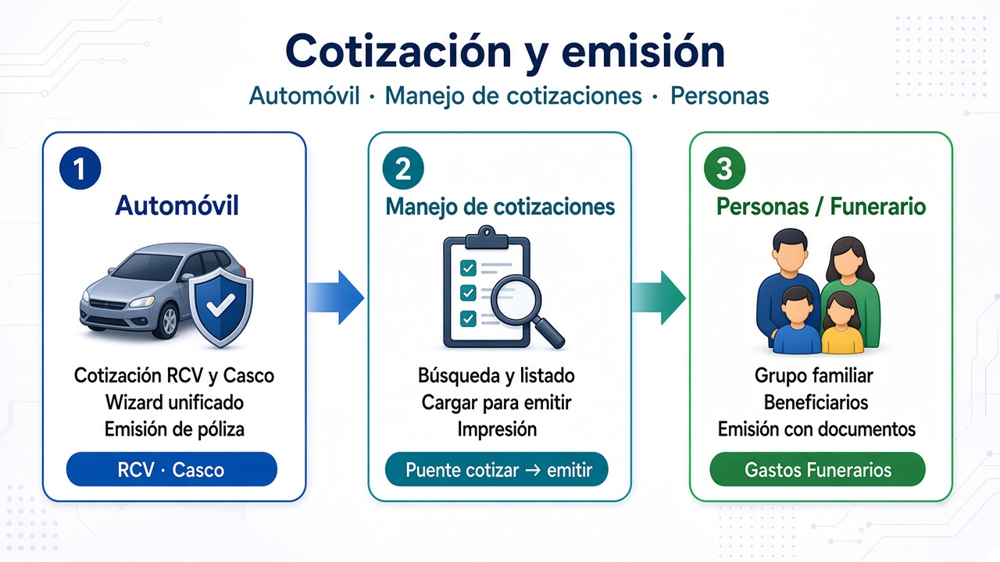
Tres pilares de la capacidad: Automóvil, manejo de cotizaciones y Personas
1 Cotización Automóvil — RCV
Flujo guiado para cotizar Responsabilidad Civil Vehicular: selección
de planes, datos del contratante y del vehículo, coberturas y resumen
de prima. El intermediario o el personal comercial cierran la
cotización en pocos pasos y la dejan lista para emitir — sin salir
del mismo patrón de Formas Configurables.
Selección de planesComparación y elección de planes RCV según el producto ofertado.
Contratante y vehículoCaptura de identificación, datos del auto y parámetros de riesgo.
CoberturasAjuste de coberturas asociadas al plan elegido.
Resumen de primaVista consolidada de prima, frecuencia y detalle antes de guardar.
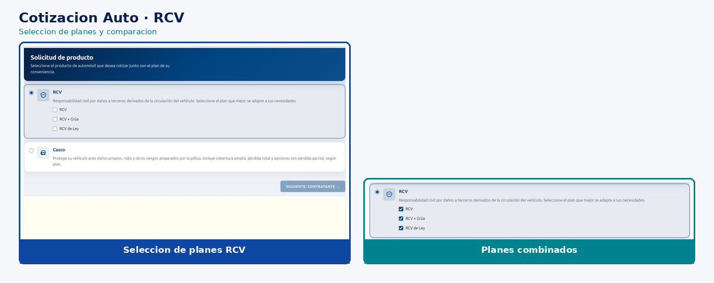
Selección de planes RCV en el flujo de cotización
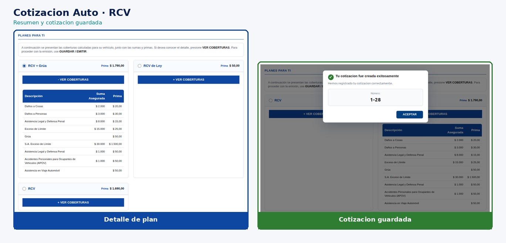
Resumen de cotización RCV listo para guardar
2 Cotización Automóvil — Casco
Misma experiencia de cotización, adaptada a Casco: producto, suma
asegurada, vehículo y coberturas, con resumen de prima coherente con
el modelo RCV para que la fuerza de ventas opere un solo patrón y
reduzca la curva de aprendizaje entre productos.
Producto CascoSelección del plan Casco y parámetros del producto.
Vehículo y sumaDatos del vehículo y suma asegurada para el cálculo.
Coberturas CascoConfiguración de coberturas propias del producto.
Resumen unificadoMisma lógica de resumen y guardado que en RCV.
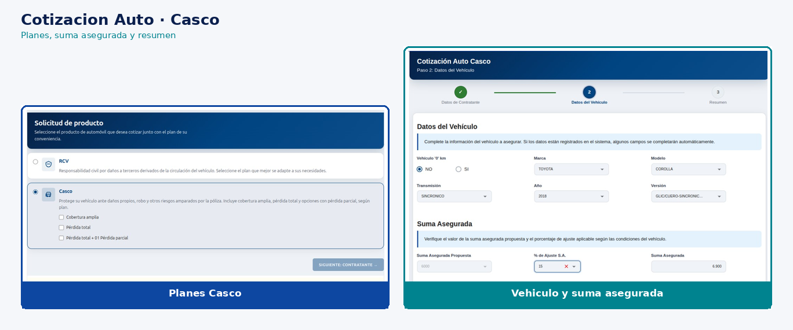
Cotización Casco: contratante, vehículo y resumen
3 Consulta y carga de cotizaciones
Consola transversal para localizar cotizaciones de Auto, Funerario
y otros productos, retomarlas para emisión e imprimir cotización o
recibo. Cierra el puente entre “cotizar” y “emitir”, evitando
reprocesar datos ya capturados.
Búsqueda flexibleFiltros por criterios de negocio para encontrar cotizaciones guardadas.
Listado de resultadosVista clara de cotizaciones disponibles para gestionar.
Cargar para emitirEditar / cargar la cotización y continuar el flujo de emisión.
ImpresiónImpresión de cotización o recibo según el estado del caso.
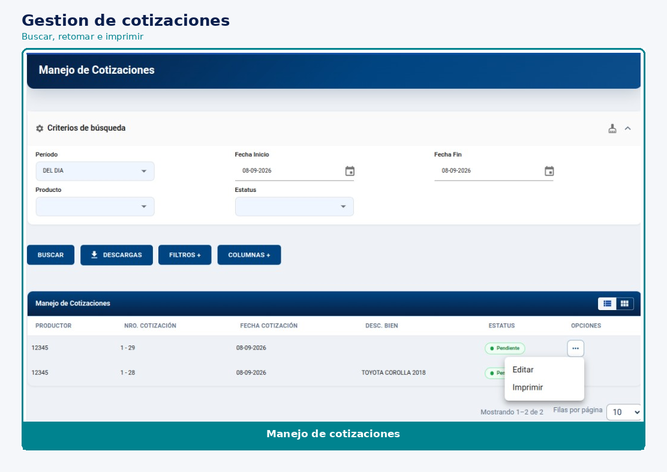
Manejo de cotizaciones: búsqueda, listado y acciones
4 Emisión Automóvil (RCV y Casco)
Wizard común para emitir pólizas RCV o Casco a partir de una
cotización: titular, pagador, vehículo, domiciliación, recaudos,
resumen de confirmación y entrega de la póliza. Un solo recorrido
operativo para ambos productos Auto.
Titular y pagadorDatos personales, económicos y de contacto; pagador condicionado si es distinto del titular.
Vehículo y beneficiarioDatos del vehículo y, cuando aplica, beneficiario preferencial.
Domiciliación y recaudosRegistro de cuenta/tarjeta y carga de documentos de la póliza.
Confirmación y pólizaResumen final, confirmación de emisión y acceso a la póliza emitida.
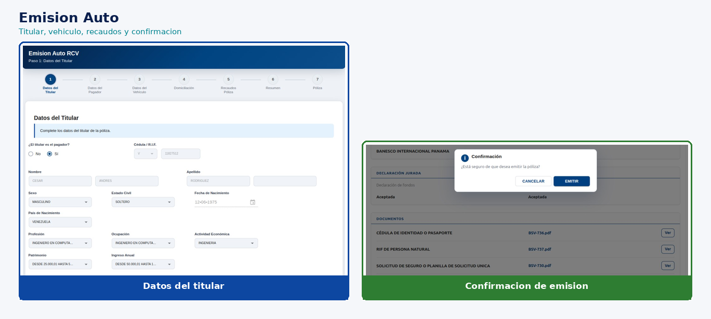
Emisión Auto: titular, vehículo y pasos del wizard
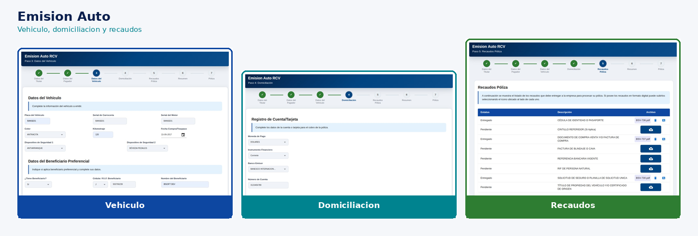
Recaudos, documentos y cierre de la emisión
5 Cotización Personas — Gastos Funerarios
Cotización de producto de Personas: selección de plan, datos del
contratante, grupo familiar / asegurados adicionales, resumen de
coberturas y frecuencia, y guardado de la cotización. Demuestra que
el mismo modelo escala a ramos distintos de Automóvil.
Producto y planSelección de Gastos Funerarios y plan ofertado.
ContratanteIdentificación y datos del contratante en el wizard.
Grupo familiarAlta de asegurados adicionales y gestión de filas del grupo.
Resumen y guardadoFrecuencia de pago, planes y guardado de la cotización.
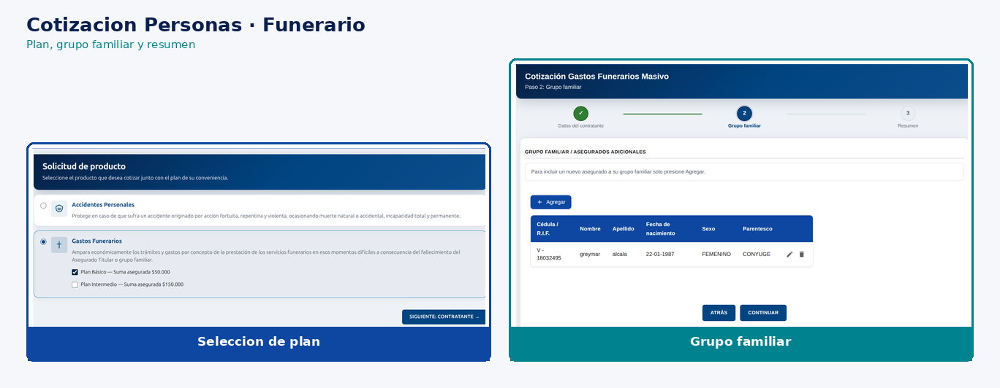
Cotización Funerario: contratante y grupo familiar
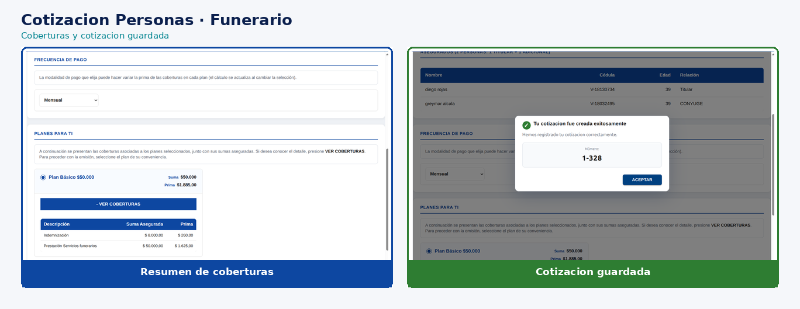
Resumen de cotización Personas / Funerario
6 Emisión Personas — Gastos Funerarios
Emisión del producto Personas: declaración y documentos,
beneficiarios, resumen de confirmación y póliza emitida — alineado
con el patrón de emisión Auto, adaptado al ramo, para que el Portal
ofrezca una experiencia comercial coherente entre líneas de negocio.
Declaración y documentosCaptura de declaración jurada y carga de recaudos.
BeneficiariosRegistro de beneficiarios del producto Personas.
ConfirmaciónResumen previo a emitir y validación del caso.
Póliza emitidaCierre del ciclo con la póliza disponible para el cliente.
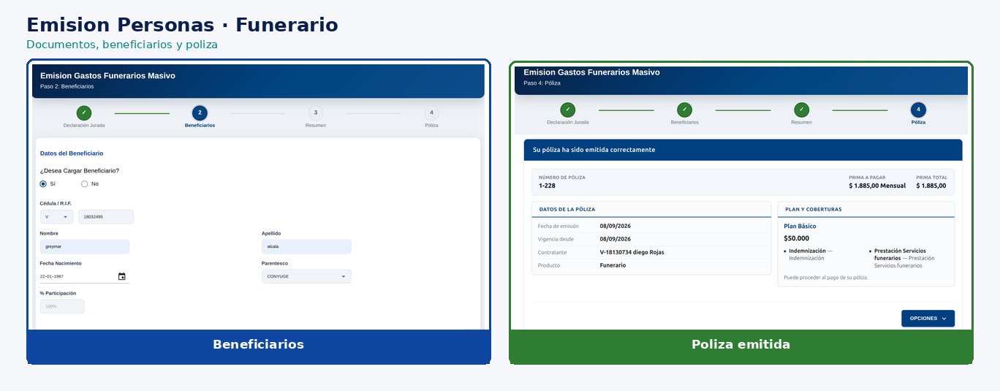
Emisión Funerario: documentos, beneficiarios y póliza
7 Un ciclo comercial reutilizable
Cotizar, consultar, cargar y emitir se repiten como patrón de negocio
en Automóvil y Personas. Eso acelera la adopción del Portal y permite
extender el mismo modelo a otros ramos sin reinventar la experiencia.
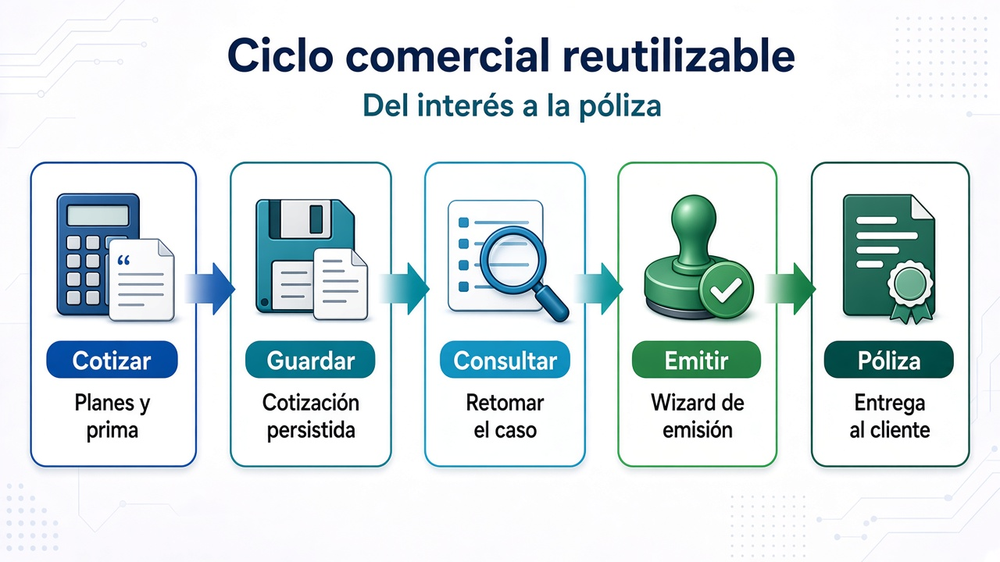
Ciclo comercial reutilizable: del interés a la póliza
Cotizar: planes, datos de riesgo y resumen de prima.
Guardar: cotización persistida lista para retomar.
Consultar: búsqueda, listado e impresión del caso.
Emitir: wizard con datos, documentos y confirmación.
Póliza: entrega del resultado al cliente y al negocio.
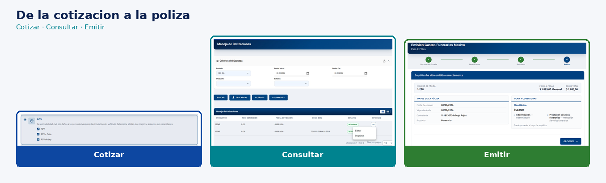
En la práctica: del interés a la póliza sobre pantallas reales
Mensaje clave: Cotización y Emisión ya están disponibles
como capacidad de negocio, construida con Formas Configurables.
Se integran al nuevo Portal reutilizando lo construido y el mismo
modelo para ampliar productos.